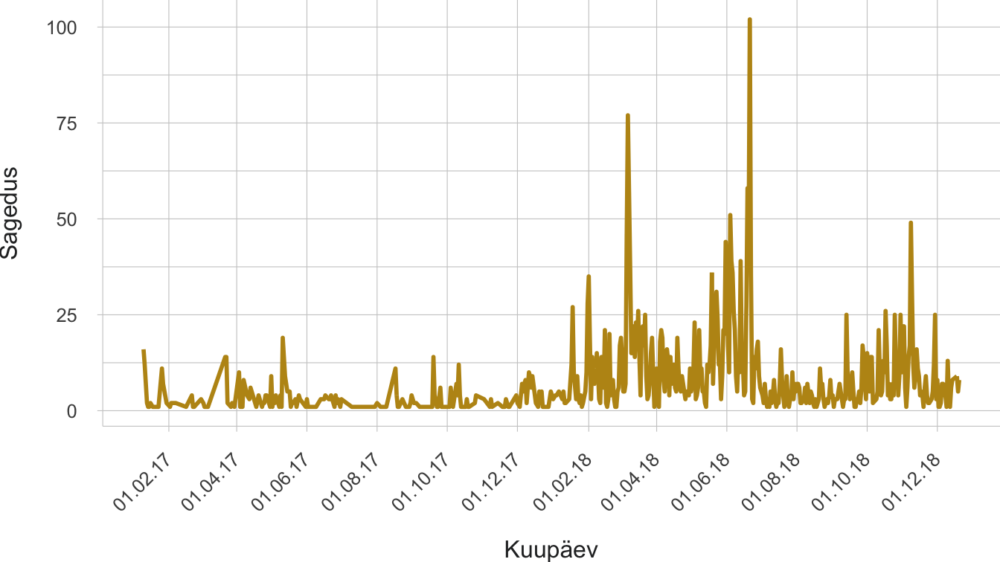

4.4 Ekspertide roll ja staatus ühiskondlikes meediaaruteludes
- Eksperdid ja teadlased suudavad Eestis käivitada olulisi ühiskondlikke autelusid ning rikastada neid teaduspõhise teabega. See aga ei tähenda, et avalikkus tajuks neid arutelusid alati teadmistepõhistena.
Aasta 2018 lõpus kerkis Eesti päevapoliitika üheks keskseks teemaks küsimus Eesti ühinemisest ÜRO ränderaamistikuga. Valitsus selles üksmeelele ei jõudnud ning mitme päeva jooksul oli õhus valitsuskoalitsiooni lagunemise võimalus. Liitumise vastu olnud justiitsminister Urmas Reinsalu põhjendas avalikes esinemistes, et tugineb rahvusvahelise õiguse ekspertide hinnangutele, mille kohaselt võtavad riigid raamistikuga liitudes endale ulatuslikke kohustusi migrantide kohtlemisel. Välisminister Sven Mikser rõhutas omakorda õiguskantsleri hinnangut, et ränderaamistik ei ole õiguslikult siduv ega too kaasa uusi kohustusi.
Sisulise arutelu kõrval ilmus Eesti ajakirjanduses sel teemal ka arvamuslugusid pealkirjadega „Püha ekspert eksitab“ (Harry Tuul, Postimees, 20.11.2018), „Pooltoonideta Eesti viib ühiskonda, kus ekspert vaikib“ (Allar Jõks, Postimees, 16.11.2018) ja „Ränderaamistiku poleemikas on vastutus nii poliitikutel kui ka teadlastel“ (Birgit Aasa, ERR, 19.11.2018). Arutelu ei käinud seega mitte ainult ÜRO dokumendi õiguslike tagajärgede üle, vaid ka selle üle, kes on pädev sõna võtma ja kuidas peaks avalikkus ekspertide seisukohtadega ümber käima. Arvamuslugude autorid, kes ise olid enamasti valdkonna eksperdid, heitsid meediale ette keerulise teema liigset lihtsustamist. Nagu viitas Tartu Ülikooli Euroopa õiguse dotsent Carri Ginter (ERR, 21.11.2018), erinesid ränderaamistiku kohta esitatud õigusarvamused üksteisest sisulises mõttes vähe, „küll polariseerus ühiskond nende ümber ja hakkas nende arvamusi üksteise pihta loopima, et asi oleks mustem ja valgem“.
Artiklitest tuleb aga välja ka autorite arusaam, et debatis osales eksperdi sildi all nii mõnigi, kes ei teinud seda objektiivselt ja faktipõhiselt aluselt, vaid enda või kellegi teise huvide edendamiseks või ideoloogilise seisukoha toetamiseks. Avalikus teemakäsitluse käigus tajuti mitmesuguseid ohte teadmistepõhise arutelu võimalikkusele üldiselt, näiteks: „Kui teadlastelt ei saa enam eeldada poliitilist erapooletust, põhjalikkust ja tasakaalustatust nende ekspertiisi kuuluva esitamisel, kannatab sellega lisaks konkreetse teadlase autoriteedile ka kogu teaduse tõsiseltvõetavus“ (Birgit Aasa, ERR, 19.11.2018).
Ränderaamistiku näide toob ilmekalt esile, kui keerukas võib olla ekspertide roll avalikes aruteludes. Peale põhiteema peavad osapooled ja avalikkus muu hulgas tegelema ka küsimustega, keda ja miks usaldada ekspertidena ning kas ja kuidas arvestada ühiskondlikult kaalukate otsuste langetamisel teaduspõhise infoga.
ÜRO globaalne ränderaamistik on ÜRO liikmesriikide poolt ühiselt läbi räägitud deklaratsioon, mis keskendub seaduslikule liikumisele, nagu töö- või õpiränne, ja annab võimaluse parandada rahvusvahelist rändealast koostööd, sealhulgas ennetada ebaseaduslikku rännet ja võidelda inimkaubanduse ja -smugeldamisega. Kokkuleppe teksti lõpetasid ÜRO liikmesriigid 2018. aasta juulis ja see võeti vastu 19. detsembril Marokos Marrakechis peetud valitsustevahelisel konverentsil. Eesti valitsus ei saavutanud raamistiku toetamises konsensust ja saatis teema Riigikogusse, kes võttis vastu raamistikku toetava avalduse. Sellele tuginedes hääletas Eesti Marrakechis raamistiku vastuvõtmise poolt.
Joonis 4.4.1. Rändelepingu protest Stenbocki maja ees
Allikas: Ekspress Meedia, Madis Veltman.
Need küsimused ei ole uued. Paljud arenenud riikide viimaste aastakümnete tähelepanuväärsed ühiskondlikud vaidlused ja vastuolud taanduvad lähemal vaatlusel just ekspertide või faktide usaldamise küsimusele. On olnud olukordi, kus teadus on alt vedanud suurõnnetuste ärahoidmisel (nt Tšornobõli ja Fukushima tuumaõnnetused, hullulehmatõbi, linnu- ja seagripp), kus peljatakse uute või olemasolevate teadusrakenduste negatiivseid mõjusid (nt vaktsiinid, geneetiliselt muundatud põllukultuurid) või kus ühiskondade ette on kerkinud ootamatud väljakutsed ja n-ö nurjatud probleemid (nt kliimamuutus, rändekriis). Nii on ekspertide ja faktide staatust puudutavad küsimused ülemaailmselt üha enam päevakorral, nagu on tõestanud ka Brexiti-kampaania, Donald Trumpi „alternatiivsete faktide“ maailm ning Venemaaga seostatavad infooperatsioonid sotsiaalmeedias.
Nurjatud probleemid on probleemid, mida on keeruline või võimatu lahendada, sest puudub arusaam või üksmeel probleemi olemusest. Probleemi määratlevad tingimused muutuvad pidevalt ning lahenduste tulemuslikkust on keeruline hinnata.
Tõnis Saarts (2018) tõdeb, et Eesti poliitika ja ühiskonna kesksed küsimused on kiiresti lähenenud postindustriaalse läänemaailma põhivoolule, keskendudes näiteks üleilmastumise mõjudele, eneseväljenduse väärtustele (nt seoses vähemuste õiguste ja keskkonnakaitsega) ning osalusdemokraatiaga seonduvale. Need on ühtlasi valdkonnad, kust pärineb suurem osa eeltoodud näidetest olulise ekspertide osalusega ühiskondlike arutelude kohta. Nii on asjakohane küsida, milline on olukord sarnaste debattidega Eestis.
Siinses artiklis vaatlen ekspertide osalust Eesti ühiskondlikes aruteludes peamiselt keskkonnateemaliste näidete toel ja analüüsin, mil määral on teadlased ja teised eksperdid päevakajalistes debattides nähtaval ja milline on nende roll arutelude kujundamisel. Seejuures keskendun just meedia vahendusel peetavatele debattidele, sest meedia on ühiskonnas kõige avalikum areen. Meedias toimuval on võime jõuda kõige suurema osani elanikest, kujundada nende teadmisi, hoiakuid ja jagatud arusaamu.
Ekspertide osaluse kohta aruteludes ei ole Eestis seni tehtud süstemaatilisi uuringuid. Siinsel püüdel suundumusi analüüsida on abiks illustreerivad väljavõtted ajakirjandusest koos mõningase üldkirjeldava statistikaga station.ee meediamonitooringust.
Teadlaste roll ühiskondlikes aruteludes
Arutleva demokraatia ideaali kohaselt (ja ka avatud valitsemise põhimõtete järgi,vt Open Government Declaration 2011) sünnivad otsused ühiskonnas sellise arutelu tulemusel, kuhu on kaasatud kõik olulised osapooled ning mille keskmes on argumenteerimine ja põhjendamine. Ekspertide osalus tagab, et arutlejate käsutuses on parim olemasolev teadmine, et jõuda informeeritud otsuseni. Seetõttu rõhutavad ka teaduskommunikatsiooni teoreetilised käsitlused, et teaduslike teadmiste arusaadavas ja selges keeles vahendamine ei teeni ainult teadustulemuste populariseerimise eesmärki, vaid on oluline komponent ühiskonna demokraatlikus toimimises.
Teadlaste avalikku arutellu kaasamise nimel on viimastel aastakümnetel teinud suuri pingutusi paljud teadusinstitutsioonid. Aastal 1977 lisas Rootsi seadusesse sätte, mille kohaselt on ülikoolide kolmas ülesanne teaduse tegemise ja õppetöö kõrval ka teadusliku teadmise vahendamine avalikkusele (Kasperowski ja Nolin 2003). Briti Kuningliku Seltsi (The Royal Society) 1985. aasta mõjukas raport „The Public Understanding of Science“ sõnastas, et avalikkusega suhtlemine on iga teadlase kohustus. Eestis toovad nii Tartu Ülikooli eetikakeskuses välja töötatud „Hea teadustava“ (2017) kui ka „Eesti teadlaste eetikakoodeks“ (2002) esile teadlase ülesande teadustulemusi „populariseerida“ või „propageerida“, eetikakoodeks lisab ka vajaduse vastu seista ebateadusele.
Poliitikadokumentides leiab see teema Eestis käsitlust aga vähem. Keskkonnaministeeriumis välja töötatud Eesti säästva arengu strateegia „Säästev Eesti 21“ (
2005) küll toob ainsa Eesti jätkusuutlikkust tagava arenguteena esile teadmistepõhisuse (selles dokumendis „teadmuspõhisus“) mitte ainult majanduses, vaid ka riigivalitsemises ja ühiskonnas laiemalt. Haridus- ja Teadusministeeriumis välja töötatud Eesti teadus- ja arendustegevuse ning innovatsiooni strateegia „Teadmistepõhine Eesti“ (2014) käsitleb teaduse panust ühiskonda aga pea eranditult majandusvõtmes.
Kui teadlane osaleb avalikes aruteludes, on see pigem kodanikuaktiivsuse väljendamine, mitte erialaselt eeldatud ja toetatud tegevus.
Eesti teadlased on ajalooliselt olnud ühiskonnas nähtavas rollis. Eurobaromeetri (2010) uuringu kohaselt soovivad eestlased teadusteemade kohta enim kuulda teadlastelt ning Euroopa Liidu keskmisega võrreldes vähem teistelt ühiskondlikelt tegutsejatelt. Toetus teadusele on tugev ning samuti on kõrged ootused selle positiivsele mõjule. Sealsamas uuringus tunnistas aga 40% eestlastest, et pole teaduse arenguga kursis nii palju, kui tahaks, viidates, et toetus teadusele on pigem ootuste- kui teadmistepõhine.
Seega võib öelda, et ühelt poolt ootab meie ühiskond teadlaste sõnumeid. Suhtlemise soodustamiseks on viimase kümmekonna aasta jooksul tekkinud ka parem tugi: on loodud tugistruktuurid ülikoolides, suurenenud teaduskajastus meedias (nt telesaade „Rakett 69“ ja portaal ERR Novaator), antakse teaduse populariseerimise auhindu ning struktuurivahendite toel toimivad riiklikud programmid (TeaMe ja TeaMe+).
Ekspert – oma valdkonda teadmistepõhiselt tutvustav spetsialist.
Teiselt poolt seostub nõudlus kas teaduse populariseerimisega (s.o teadlaste töö või üldiste teaduslike põhimõtete selgitamine) või oodatakse teaduselt eeskätt rakenduslikku panust majanduse hüvanguks. Kummalgi juhul puudub otseselt eelkirjeldatud demokraatlik mõõde, mis tekib osalemisest avalikes debattides. Samuti ei ole Eesti ülikoolides veel sisse töötatud viise, kuidas väärtustada teadlase panust ühiskonda, sealhulgas osalemist avalikes aruteludes ja poliitikakujundamises ning teaduskommunikatsioonis laiemalt, ega soosi seda ka teaduse ja ülikoolide rahastamismudelid. Nii võib öelda, et kui teadlane osaleb avalikes aruteludes, on see pigem kodanikuaktiivsuse väljendamine, mitte erialaselt eeldatud ja toetatud tegevus. Sama võib eeldada teiste oma valdkonda teadmistepõhiselt tutvustavate spetsialistide kohta. Neil põhjustel ei ole ekspertide pidev aktiivne osalus ühiskondlikes aruteludes sugugi enesestmõistetav.
Puidurafineerimistehase kava ärgitas teadlasi vedama avalikku debatti
Jaanuaris 2017 teatas rühm Eesti ettevõtjaid, et kaalub „tänapäevase ja keskkonnasõbraliku puidurafineerimistehase ehitamist Eestisse“ (Biorefinery.ee, 10.01.2017). Paar nädalat hiljem lisas tehase arendamiseks loodud ettevõte Est-For Invest, et „eelanalüüsi kohaselt oleks kõige otstarbekam rajada tehas Tartu- või Viljandimaale, Suur-Emajõe jõgikonda. Tehase asukoha valiku tegemiseks, sealhulgas keskkonnamõjude hindamiseks, taotlevad projekti arendajad riigi eriplaneeringut“ (Biorefinery.ee, 27.01.2017).
Valitsus algatas eriplaneeringu tehasele sobivaima asukoha leidmiseks ja mõjude strateegiliseks hindamiseks mais 2017. Samal ajal ajakirjanduses ilmuma hakanud hinnangutes võib eristada kolme peamist muret: tehase võimalik mõju Eesti metsadele (mis seondus samal ajal käinud laiema aruteluga metsanduse arengukava üle), mure Emajõe ja Peipsi järve seisundi pärast ning mõju inimeste elukeskkonnale (eeskätt võimalike haisulekete tõttu). Lisandus kartus, et riigi eriplaneeringut kasutades minnakse otsuste tegemisel mööda kohalikest elanikest ja kohalikest omavalitsustest.
Arutelu edenedes vastasseisud võimendusid. Aasta 2018 jaanipäeva eel teatas valitsus eriplaneeringu lõpetamise protsessi alustamisest ja sama aasta novembris lõpetas selle ametlikult. Seejärel andsid ka arendajad teada, et loobuvad tehase rajamise kavast. Meediamonitooringu (Joonis 4.4.2) põhjal olid enim kajastatud sündmused eriplaneeringu alustamise ja lõpetamise otsuste vahel kolme ülikooli rektori kokkulepe (detsembris 2017), allkirjade kogumine Tartus (jaanuaris 2018), avalikkuse ette jõudnud puidutarneleping RMKga (jaanuaris 2018), Tartu apelli nime all sõnastatud kodanike pöördumine ja tehase rajamise mõjude arutelu Tartu volikogus, mis otsustas taotleda riigi eriplaneeringu lõpetamist (märtsis 2018), ning tehase rajamise vastu suunatud Emajõe inimkett ja protestid teise võimaliku asukohana nimetatud Tabiveres (mais 2018).
Uue puidurafineerimistehase rajamise algatasid Eesti ettevõtjad 2017. aasta jaanuaris ja pakkusid selle võimalikuks asukohaks Suur-Emajõe läheduse. Valitsus algatas eriplaneeringu tehasele sobivaima asukoha leidmiseks ja mõjude strateegiliseks hindamiseks mais 2017. Tartus koondusid tehase rajamise kava suhtes kriitilised teadlased ja kodanikuaktivistid Tartu apelli töörühma, kes koostas pöördumisi riigi eriplaneeringu lõpetamiseks. Sama otsustas 2018. aasta märtsis taotleda Tartu linnavolikogu. Sama aasta juunis moodustati nõudmiste toetuseks Emajõe ääres mitme tuhande osalejaga inimkett. 2018. aasta jaanipäeva eel teataski valitsus eriplaneeringu lõpetamise protsessi alustamisest ja sama aasta novembris lõpetas selle ametlikult, mille järel peatasid ettevõtjad tehase arendamise.
Joonis 4.4.2. Puidurafineerimistehase mainimissagedus meedias perioodil 1.01.2017–20.12.2018

Allikas: Station.ee meediamonitooring, otsisõnad „puidurafineerimistehas“ ja „tselluloositehas“.
Kokku mainiti märksõnu „puidurafineerimistehas“ või „tselluloositehas“ 2017. ja 2018. aasta jooksul meedias ligi 4000 artiklis ja saatelõigus. Enim pälvis kajastusi juunikuine valitsuse otsus alustada eriplaneeringu lõpetamine, teise tipu tekitas märtsikuine Tartu volikogu arutelu. 41% meediakajastustest mainis ka ülikoole, teadlasi või teadust üldiselt, andes ligikaudse määra, kuivõrd arutelud teadusega seonduvale toetusid või viitasid. Seejuures oli nende märksõnade mainimine sagedasem just 2018. aasta märtsikuus ja oluliselt harvem juunis, mil oli teema kajastuste üldine tipp.
Teema kohta ilmunud silmapaistvamaid artikleid vaadeldes saab täpsemalt eritleda teadlaste ja teiste ekspertide osalust ja rolli. Nende põhjal võib öelda, et teadmistepõhisus oli debatis oluline märksõna, mida oma sõnades rõhutasid nii tehase rajamise eestvedajad (Biorefinery.ee, 7.03.2018), protsessi kriitikud, näiteks Tartu apelli töörühm (ERR, 5.06.2018) kui ka sõltumatute ekspertidena arvamuslugusid kirjutanud teadlased (Indrek Aarna, Maaleht, 19.03.2018; Enn Loigu, Eesti Ekspress, 23.05.2018). Seejuures ei saavutatud siiski üksmeelt selles, millised teadmised on olulised. Suurimad vastuolud tekkisid küsimuses, kas Emajõe äärde tehase rajamise otsuse jaoks on tarvis uuringuid või mitte.
Joonis 4.4.3. rafineerimistehase meeleavaldus Emajõel, Tartus
Allikas: Foto autor Oop.
Keskkonnamõju hindamine oleks olnud riigi eriplaneeringu üks osa, sellega aga ei jõutud alustada. Emajõe äärde tehase rajamise vastased, näiteks Urmas Klaas, ütlesid kohati otse välja seisukoha, et nende hinnangul pole täiendavaid uuringuid tarvis (Indrek Tark, Delfi, 9.03.2018). Seda seisukohta kritiseeriti debatis korduvalt kui tunnistust emotsionaalsest, mittetõenduspõhisest käsitlusest; näiteks tegi sellise etteheite Eesti Teaduste Akadeemia president Tarmo Soomere (Tõnu Karjatse, Toomas Pott, ERR, 9.11.2018).
Väidet, et uuringuid pole tarvis, esitleti samuti teaduspõhisena. Näiteks kirjutas Kristjan Zobel (Postimees, 20.04.2018): „Võrtsjärve-Emajõe-Peipsi vesikond on kahtlemata üks läbiuuritumaid siseveekogude ökosüsteeme maailmas. [—] Mina ei oska ökoloogina tõesti pakkuda, mida olulist me selle veeökosüsteemi juures ei tea“. Erik Puura (Postimees, 11.03.2018) sõnul „ei hakata uurima mitte seda, kas keskkond jääks pärast tehase käivitumist sama puhtaks, vaid seda, kui palju halvemaks võiks Tartu, Emajõe ja Peipsi keskkonnaseisund vastavalt seadustele ja normatiividele minna“.
Kuna argumendi kohaselt on Emajõe ja Peipsi seisund halb ega tohi halveneda, välistab see mis tahes reostusallika lisamise vesikonda. Vastusena on teised teadlased (Enn Loigu, Eesti Ekspress, 23.05.2018) jällegi rõhutanud veekogude seisundi olulist paranemist viimasel ajal ning mitmeid eri aspekte (Indrek Aarna, Maaleht, 19.03.2018; Tiina Kaukvere, Postimees, 23.07.2018), mida me uuringuteta teada ei saa, kui ka sooviksime teadmistepõhiselt tehase rajamist välistada.
Teadlaste eri arusaamad ja tõlgendused näiteks seoses lubatud fosforitasemega tõid kaasa vastastikused etteheited avalikkuse eksitamises (Enn Loigu, Eesti Ekspress, 23.05.2018; Tartu apelli töörühm 2018), või suisa valefaktide kasutamises (Indrek Aarna, Maaleht, 19.03.2018), kusjuures mõnikord seati avalikult kahtluse alla teise teadlase asjatundlikkus (Ülo Mander, Eesti Päevaleht, 19.06.2018; vt ka Tartu apelli töörühm 2018). Neid käsitluste ja arusaamade erinevusi käsitles mõnevõrra ka meedia, tehes seda nii naeruvääristavalt, väites et „argumente varjutasid emotsioonid“ (Madis Hindre, ERR, 16.03.2018) kui ka tasakaalustatult (Tiina Kaukvere, Postimees, 23.07.2018), viimast alles pärast valitsuse otsust algatada eriplaneeringu lõpetamine.
Toodud viited (aga ka mitme teise teadlase, nt Ülo Manderi, Jaan Kersi, Tõnu Kurissoo ja Andres Marandi sõnavõtud) näitavad, et debatis osales arvestatav hulk teadlasi, kes panustasid arutellu teadusliku teadmise ja argumenteeritud väidetega. Ka kodanike pöördumise sõnastanud ja allkirju kogunud Tartu apelli töörühm koosnes peamiselt Tartu ülikoolide teadlastest. Mitmed meedias ilmunud teadlaste sõnavõtud osutusid kaalukateks, neile viidati diskussiooni käigus korduvalt.
Sellegipoolest on kogu puidurafineerimistehase rajamise plaani ümber arenenud ühiskondlikku protsessi tagantjärele meedias hinnatud peamiselt või isegi üksnes emotsioonidest juhituks, mitteratsionaalseks (nt Raivo Vare – Äripäev, 28.12.2018, Argo Rosin – Postimees, 14.01.2019, Alar Karis – ERR, 31.12.2018 ). Ühelt poolt võib selle põhjuseks olla asjaolu, et teaduslikud küsimused jäid lahenduseta, enne algatas valitsus eriplaneeringu menetlemise lõpetamise, põhjendades seda eeskätt kohalike vastuseisuga (Äripäev, 21.06.2018) . Tartu apelli eestvedajadki hindasid toimunut oma kodulehel kui kodanikuühiskonna, mitte niivõrd oma argumentide võitu. Samuti puudus teadlaskonna seas ühtsus, mille tõttu oli nende debatti lihtne seada emotsionaalsemate vastaseisude (Tartu–Tallinn, ärimehed–looduskaitsjad) raamistusse.Puidurafineerimistehase rajamise plaani ümber arenenud ühiskondlikku protsessi on tagantjärele meedias hinnatud peamiselt või isegi üksnes emotsioonidest juhituks, mitteratsionaalseks.
Puidurafineerimistehasele, aga ka teistele suurarendustele viidates tõstatas veel laiema küsimuse Mihkel Kangur (Postimees, 9.11.2018): kas praegune uuringute tellimise viis tagab nende objektiivsuse ja kvaliteedi? Samuti aktiveeris teadlasi avalikku arutellu astuma 2017. aastal lõpus sõlmitud kolme ülikooli rektori lepe, mille sõnastuse kohaselt määravad ülikoolid „suuremate teemade“ puhul „oma seisukohtade avalikustamiseks kõneisikud“ (Kaur Maran, Postimees, 8.12.2017) . Ka need teadlased, kes ei olnud otseselt tehasedebatiga seotud, lugesid sellest välja soovi piirata kriitilisi hääli ning asusid avalikkusele selgitama akadeemilise vabaduse olemust ja olulisust.
Seal, kus üks osapool nägi argumenteerimist ja teaduslikke väiteid, tajusid teised avalikkuse eksitamist ja emotsionaalsust ning vastupidi.
Ilmselt on vähesed teemad iseseisvuse taastanud Eestis siinseid teadlasi sedavõrd innustanud avalikus arutelus osalema, kui seda suutis puidurafineerimistehase rajamise plaan. Peamised meediakanalid võimaldasid eri pooltel oma seisukohti väljendada. Kuigi tänu sellele oli avalikkuse käsutuses piisavalt teaduslikke argumente (pikemad ja põhjalikumad artiklid olid mittetellijatele enamasti küll n-ö maksumüüri taga), ei tajutud arutelu tervikuna teadmistepõhisena. Ekspertide vahel toimus debatt teaduslike väidete üle, kuid valitses ka vastuolu kogu protsessi mõtestamisel: seal, kus ühed nägid argumenteerimist ja teaduslikke väiteid, tajusid teised avalikkuse eksitamist ja emotsionaalsust ning vastupidi.
Paljude omaduste poolest oli puidurafineerimistehase debatt Eestile esma- ja erakordne, kuid loomu poolest meenutab see suuresti Lääne-Euroopas juba 1970. aastatest tuntud vastasseise, mis on saanud tuntuks akronüümiga NIMBY (ingl not in my back yard ehk tõlkes “mitte minu tagahoovis”). Ka neis on suurarenduste tekitav vastasseis ühelt poolt nähtav emotsionaalse ja irratsionaalsena, teiselt poolt aga kodanike adekvaatse riskitaju väljendusena (vt nt Kraft ja Clary 1991). Tõsiasi, et Eestis asetusid kohalike rolli muidu ühiskonnas ekspertidena tunnustatud inimesed, ei tundunud seda mustrit Eestis muutvat.
Metsandusdebatis ei toonud avalik arutelu eksperte üksteisele lähemale
Kui puidurafineerimistehase debatis said – üldise taju kohaselt – määravaks emotsioonid, mitte argumendid, siis kas mõne Eesti lähiajaloos peetud arutelu puhul saab välja tuua ekspertide rolli otsuste teadmistepõhisel suunamisel?
Tselluloositehase aruteluga samaaegne, samalaadne, haakuv ja vastastikku võimendav oli debatt Eesti metsamajanduse üle. Ka metsaarutelu puhul saame öelda, et teadlaste hääl oli kuuldav: avaliku debati üks käivitajaid oli teadlaste Raul Rosenvaldi, Asko Lõhmuse ja Kaie Kriiska Postimehes ilmunud arvamuslugu (14.12.2016), mis juhtis tähelepanu teadlaste tajutud probleemidele Keskkonnaministeeriumi metsa juurdekasvu arvutustes. Samal ajal alustas vastusena plaanitud metsaseaduse muudatustele rahvaliikumine Eesti Metsa Abiks, mis tõi lageraiete küsimuse ühiskonna tähelepanu alla. Keskkonnaorganisatsioonide protestid saavutasid plaanitavas metsaseaduses mõningaid kohandusi ning lubaduse huvigruppe paremini kaasata (Liis Velsker, Postimees, 16.12.2016). Teema on püsinud aktuaalne seoses 2018. aastal alanud metsanduse arengukava koostamise protsessiga.
Aastal 2016 algatas Keskkonnaministeerium metsaseaduse muutmise, millega langetati kuuskede raievanust. Muudatuse vastu protesteerimiseks loodud kodanikuliikumise Eesti Metsa Abiks sõnul on raietegevus Eestis kontrolli alt väljunud. Samal ajal väitsid ökoloogiateadlased, et metsaseaduse muutmise õigustamiseks kasutatud Keskkonnaministeeriumi arvutused metsa juurdekasvu kohta on avalikkust eksitavad. Vastanduste tulemusel kujundati käimasolev metsanduse arengukava koostamise protsess kaasavam, kuid pinged on püsinud.
Selleski olid eksperdid meedias nähtavad ja pidasid omavahelist, kohati üsna tehnilist arutelu. Kaks rühma, keda võib üldistatult nimetada „ökoloogideks“ ja „metsakorraldajateks“ (kelle sekka saab arvestada ka Keskkonnaministeeriumi esindajad), vaidlesid mõistete, metsa juurdekasvu mõõtmise metoodikate ja muu statistika tõlgendamise üle. Kahel juhtumi avalikus arutelus oli veelgi sarnasusi: siingi tundsid mitmed eksperdid vajadust rõhutada, et senine arutelu on olnud liiga emotsionaalne ja väärinfot täis ning et otsustamisel peaks usaldama asjatundjaid (Veiko Uri, Sirp, 24.03.2017), ), vältides müüte, emotsioone ja eelarvamusi.
Ekspertide debatiga samal ajal toimusid avalikkuses aktsioonid, mida sai nimetada emotsioonidele tuginevaks. See võimaldas oponentidel laiendada hinnangut kogu teemakäsitlusele, sealhulgas ekspertide panusele.
Ekspertide debatiga samal ajal toimusid avalikkuses aktsioonid – puidurafineerimistehase puhul allkirjade kogumine või inimkett Emajõe ääres (ERR, 19.05.2018) ning metsateema puhul protest Haabersti hõberemmelga langetamise vastu (Liis Velsker, Hanneli Rudi, Postimees, 27.06.2017) –, mida sai nimetada emotsioonidele tuginevaks. See võimaldas oponentidel laiendada hinnangut kogu teemakäsitlusele, sealhulgas ekspertide panusele. Nii kohtab metsandusdebatiski „metsakorraldajate“ poolelt (konkreetselt isikutele või tegudele viitamata) hinnanguid, et puhkenud on „mõistetamatu paanika“ (Henn Korjus, Eesti Maaülikooli pressiteade, 30.03.2017), käib „pooltõdedega tähelepanu taotlemine“ (Andres Talijärv intervjuus Maalehele, 19.07.2018) , või vihjeid lamemaalastele (Marko Pomerants, Põllumajandus.ee, 20.04.2017).
On ka selgemalt ekspertide vastu suunatud väiteid: nende kriitika on mitteteaduspõhine (Riina Martverk, Postimees, 26.01.2018) või tuleneb piiratud vaatest, millele vastandub metsandusasjatundjate oskus näha metsa eluringi (Andres Talijärv„Bioloogid on õppinud bioloogilist poolt. [—] Metsamehed on hariduse poolelt rikkamad.“ – Viio Aitsam, Postimees, 19.07.2018). Rõhutatakse seniste otsuste teaduspõhisust (Riina Martverk, Postimees, 15.12.2016) . „Ökoloogide“ leer heidab omakorda ette, et „metsakorraldajad“ eitavad ökoloogilisi probleeme ja eksitavad statistikat tõlgendades tahtlikult, seejuures metsatööstuse kasuks (Asko Lõhmus, Sirp, 1.09.2017 ja 14.09.2018), neid iseloomustab piiratud mõtteviis, mis käsitleb ainult metsa majanduslikku väärtust (Indrek Talpsep, Postimees, 5.01.2017). Seatakse kahtluse alla ekspertide ja riigiametnike sõltumatus: riigi metsanduspoliitikat ja seda toetavate eksperdiarvamuste taga nähti „suurtöösturite kõrvu“ ja seda käsitati majanduslike huvide, kohati otseselt metsatööstuse teenistuses olevana(Kaul Nurm, Postimees, 6.06.2017; Asko Lõhmus, Sirp, 14.09.2018).
Vähe oli märke sellest, et poolte seisukohad oleksid arutelu jooksul teineteisele lähemale liikunud, kumbki jäi oma arusaamisele kindlaks. Üks arutelu algataja, Asko Lõhmus (Sirp, 14.09.2018), võttis debati olemuse kokku, nimetades seda eelkõige argumentidega raskesti lahendatavaks ning metsanduse juhtide kapseldunud hoiakutesse kinni jäänud väärtuskonfliktiks.
Ekspertidena said avalikkuses rohkem tunnustust siiski metsanduspoliitika kriitikud, näiteks nimetas Postimees Asko Lõhmuse metsandusdebatis osalemise eest 2017. aastal aasta inimeseks.
Kokkuvõte
Kuidas tunnevad eksperdid end Eesti aruteluruumis? Selles artiklis kirjeldatud kolm näidet (ränderaamistik, puidurafineerimistehas, metsandus) osutavad sellele, kui keeruka olukorraga peab kokku puutuma vastuolulist teemat käsitlevasse avalikku debatti sekkuda sooviv asjatundja. Peamiselt on raskused seotud sellega, kuidas eksperdi esitatud fakte ja argumente arutelus teiste osaliste poolt käsitletakse.
Tumeekspertiis on teadlaste ja ekspertide teadmine, mis ei ole jõudnud ülejäänud ühiskonnani, kuigi see aitaks lahendada või käsitleda olulisi probleeme.
Esmalt on julgustav siiski asjaolu, et iga teema puhul on eksperdid meedias hästi esindatud. Sellele viitab ka Ragne Kõuts-Klemmi artikkel siinses peatükis. Sõna saab mitu eksperti, nad esitavad eri seisukohti ning vajaduse korral üsna põhjalikult. See näitab, et meediakanalitel on põhimõtteline tahe teadmistepõhiste debattide toetamiseks olemas. Ka edukad populariseerimise näited (Geenivaramu, ESTCube) tõestavad, et eksperdid võivad end teinekord meedias tunda hoituna ning saavutada hea nähtavuse ja ühiskondliku mõju. Selle kõrval on teemasid ja eksperte, kes pole tahtnud või pole eri põhjustel suutnud meediakünnist ületada. Meil on teadmised, mis on ühiskonnale kättesaadavad tänu ekspertide osalusele avalikes aruteludes, ning tumeekspertiis ehk teadmine, mis pole (väljaspool akadeemilist ringkonda) kättesaadav ja ühiskond ei pruugi teadagi, et see on meie ekspertidel olemas.
Ühiskonna huvides on, et oluliste küsimuste aruteludes ei jääks vajalikud teadmised varjule pelgalt seetõttu, et nende avalikkusele vahendamine on vaevanõudev.
Ühiskonna huvides on, et oluliste küsimuste aruteludes ei jääks vajalikud teadmised varjule pelgalt seetõttu, et nende avalikkusele vahendamine on vaevanõudev.
Vastuoluliste teemade puhul peab ekspert arvestama tõenäolise vastupanuga tema esitatud faktidele, väidetele ja tõlgendustele. Siinsete näidete puhul on sageli vaidlustajaks olnud teine ekspert ning sisuliste aspektidega samavõrra oluliseks kerkib arutelu eksperdi või tema väidete usaldusväärsuse kriteeriumide üle. Need arutelu aspektid võivad tagada meile parema diskussiooni, kui neid aga kasutatakse ideoloogiliselt, siis võivad need arutelu hoopis tasalülitada.
Seega võib debatis osalemine olla eksperdile rusuv kogemus. Harva, kui meedias väljaastumisel on nähtav mõju otsustele või isegi debati kulule. Palveid lõpetada emotsioonidele mängimine ja alustada argumenteeritud arutelu ilmselt ei võeta kuulda. Halvemal juhul võib keegi noppida valikuliselt üles mõne eksperdi väite ja hakata seda enda tõlgenduses ideoloogiliselt ära kasutama. Kui lisada, et enamasti ei ole eksperdil arutelus kaasa löömiseks muud põhjust peale tunnetatud kodanikukohuse, näeme palju põhjusi, miks nii meedia, auditooriumid kui ka eksperdid ise peaksid pingutama Eestis argumenteeritud arutelu toetavate keskkondade alalhoidmise ja arendamise nimel. Muu hulgas ka seetõttu, et ühiskondlike probleemide keerukus eeldatavasti vaid süveneb.
Siinsed näited tõid esile, et teadlased-eksperdid on Eestis eri tüüpi ühiskondlikes aruteludes täitnud eri rolle: teadlane võib osa võtta aktivistina, tegutsedes teatud eesmärgi saavutamise nimel; ta võib olla selgitaja, maailma teadmise vahendaja, aga ka kriitiline mõtestaja, küsimuste püstitaja. Näited tõestavad, et keerukustest hoolimata suudavad eksperdid Eestis käima tõmmata olulisi ühiskondlikke arutelusid ning rikastada neid teaduspõhise teabega.
Parima eksperditeadmise nähtavale toomine ja sellele kasutusse aitamine on pidev väljakutse, millega seisab silmitsi ka inimarengu aruanne. Olgu lugejale kaasa antud teadmine, et kui nii 2013. kui ka 2015. aasta aruande puhul koondus pool aruandeperioodi kõigist meediakajastusest aruande ilmumise järgsele paarile nädalale, siis 2017. aasta aruande mõju on püsinud kauem: kaks kolmandikku kajastustest on ilmunud hiljem kui vahetult aruande väljatuleku järel (station.ee meediamonitooringu andmeil).
Viidatud allikad
Eesti teadlaste eetikakoodeks. 2002.
Eurobarometer 2010. Special Eurobarometer 304. Science and Technology. European Commission: Research Directorate-General.
Hea teadustava. 2017. Tartu: Tartu Ülikooli eetikakeskus.
Kasperowski, D., Nolin, J. 2003. Initiatives on public understanding of science in Sweden. – Optimising public understanding of Science and Technology. Brussels: European Commission, 562–588.
Kraft, M. E., Clary, B. B. 1991. Citizen participation and the NIMBY syndrome: public response to radioactive waste disposal. – The Western Political Quarterly, 44 (2), 299–328.
Open Government Declaration. 2011. Loetud aadressil: https://www.opengovpartnership.org/process/joining-ogp/open-government-declaration/
Saarts, T. 2018. Hüvasti, postikommunistlik Eesti! – Sirp, 14.12.2018.
Säästev Eesti 21. 2005. Tallinn: Eesti Keskkonnaministeerium.
Teadmistepõhine Eesti. 2014. Tartu: Haridus- ja Teadusministeerium.
The Royal Society. 1985. The public understanding of science. Kättesaadav aadressil: https://royalsociety.org/~/media/Royal_Society_Content/policy/publications/1985/10700.pdf